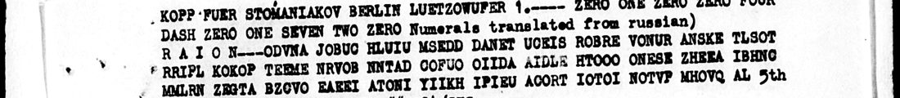
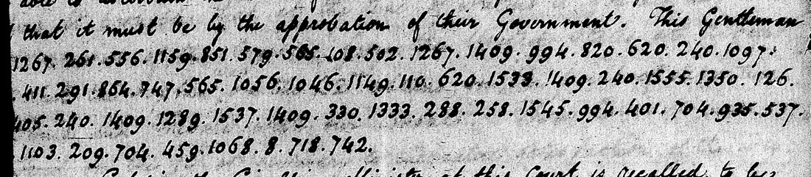
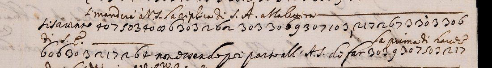

Results so far
Every entry by date, 1150–1991. Hover or tap a dot for the story; click a category under the bar to isolate it.
Entries by century, 1150–1991. Tap a century for its write-ups.
All 9 categories
breakdown
129 from the ciphertext alone, 150 from plaintext beside the ciphertext, 27 from plaintext found elsewhere. 195 of them with outside contributors. In 9 of them the key was recovered but the text does not yet read.breakdown
135 with a known key, 49 with a key matched here from another document, 110 from a complete existing decipherment. In 15 of them the key was applied but the text does not yet read.736 entries, one per row of the results tables, each classed by how its text was obtained. 23 turned out not to be ciphers or could not be reached and 11 are in progress, which leaves 702 attempted; every percentage here is of those 702.Percentages are of the 702 attempted.
Counted from the results tables in the repository README by _build_stats.py; regenerated 25 November 2026. Rows are documents, not correspondents.
Three ways to help
Or check one of 234 readings waiting for an independent check, or send a cipher that is not listed. Every contribution is credited. How to contribute →
Start with these

Ibn al-Qabāqibī’s cipher verses, about 1330–1370 (Penn LJS 51)
The last cipher in a Mamluk secretary’s book of cipher verses (University of Pennsylvania, LJS 51, f. 106v) lost its solution with the end of the manuscript. Its 22-sign alphabet was recovered from a red gloss over the first five signs, the word for eyelids repeated three times, and the ṭawīl metre. The seven lines are two Arabic love verses; one damaged word is not read. Corrected on 23 November 2026 after Alan Elbaum’s review (the sender’s name and seven points of reading).
I lay awake, though my eyelids are sound, and did not sleep; she slept and did not lie awake, though her eyelids are sick
read →
Aaron Burr to Joseph Alston, July 1804
A week after the duel with Hamilton, Burr wrote to his son-in-law with ten lines in a cipher of figures and stroke signs (Gilder Lehrman GLC01523), catalogued as undecoded. It is a simple substitution, its key recovered here from the cipher alone, and all 132 signs read. Burr asks what Alston would advise if the coroner’s jury finds murder: to stand trial, to go to Europe, or what?
“If the inquest of murder be found, what would you advise – To stand – to go to Europe or what?”
read →
Siena no. 12: a royal bride for Sforza, Naples 1413
A letter to the condottiere Sforza Attendolo, Naples, 10 March 1413, wholly in a homophonic cipher of 46 graphic signs, address included (Concistoro 2308 fasc. 2 no. 12, DECODE R4790). George Lasry recovered the key from the ciphertext alone with CTTS and Claude in October 2026; more than 95% of the text reads. King Ladislaus offers Sforza a bride of his own house, a Malatesta or a Brancaleoni girl.
“El signore [Re] ve vole dare quale ve piace de quelle doe”
 read →
read →

Charles XII to the Council of the Realm, Bender, 26 April 1710
Charles XII’s letter from Bender to the Swedish Council of the Realm, with a second copy for his envoys in London and The Hague, in a Swedish nomenclator of about 1,100 numbers in alphabetical order (NLA Stade Rep. 5a Nr. 670). Brice Dudout rebuilt the key from a ciphered troop list and its clear draft in the same file, tested it on letters not used to build it, and deciphered both copies: 639 of 640 groups, 278 of 303 cipher words read once probable values and clerk’s slips are counted as holes. After the Danish defeat at Helsingborg the King offers Denmark peace under the mediation of the Maritime Powers and gives the Council a free hand to agree an armistice, even for a whole year. Contributed by Brice Dudout.
“så äre wi benägne att inga med Konungen i B.B. en billig fred under Sjömakternas mediation”
 read →
read →

Lejava to Stomoniakov: fifty thousand gold rubles, 5 April 1921
A radio telegram intercepted at Constantinople and filed unread. A columnar transposition of Russian in Latin letters, 11 columns, key recovered from the ciphertext alone. It orders fifty thousand gold rubles to Berlin for the Scientific-Technical Department’s orders; 9 of its 21 words read as the decryption stands, the rest carry slipped letters or supplied words.
pyat’desyat tysyach rublei zolotom
read →
The Japanese Army’s numeric kana cipher, 1902–04
Imperial Japanese Army telegrams in which two digits stand for one kana: the vowel row, then the consonant column counted backwards. Harumi-Matsuba found them in the JACAR files and rebuilt the table from one telegram against the readings pencilled on its outgoing draft. Four telegrams read, one of them with no translation: a request of January 1904 for maps of Korea. Checked here with an independent decoder, a permutation control and the forms.
ヨヨウノカンコクチズダイヨ · 要用ノ韓国地図貸与サレタシ · Kokura, 25 January 1904

 read →
read →
Twenty favourites: the funny, the historic, the ingenious, the hardest →
Latest findings
 Argumedo to Félix Díaz, 5 and 20 October 1921 — deciphered in part with Narváez’s published table: 41 of 50 cipher words The 25 runs Narváez did not print, deciphered with his two-digit table: a Michoacán landowner offers his hacienda and 80 to 100 armed men, and a commission for Panindícuaro is granted with the rank of colonel. Contributed by Brice Dudout. write-up
Argumedo to Félix Díaz, 5 and 20 October 1921 — deciphered in part with Narváez’s published table: 41 of 50 cipher words The 25 runs Narváez did not print, deciphered with his two-digit table: a Michoacán landowner offers his hacienda and 80 to 100 armed men, and a commission for Panindícuaro is granted with the rank of colonel. Contributed by Brice Dudout. write-up
David Humphreys to Timothy Pickering, Madrid, 1799 — key recovered from the clerks' decipherments of other despatches, deciphered in part: 224 of 281 cipher words Three coded passages with no decipherment on the film, read with a rebuilt table of his lost code that passed a held-out test: Yrujo's recall, and Urquijo's assurance on Louisiana. Contributed by Andrew Beling. write-up
 Thomas Edmondes to an unnamed lord, camp before Laon, 9 July 1594 — key recovered from the printed cipher alone, deciphered in part: 57 of 147 words sure The Salisbury calendar printed this letter in 1892 with its cipher left undeciphered; the cipher gives the case of the person shown as 55 for a command in Brittany, with port towns for the English. Contributed by Andrew Beling. write-up
Thomas Edmondes to an unnamed lord, camp before Laon, 9 July 1594 — key recovered from the printed cipher alone, deciphered in part: 57 of 147 words sure The Salisbury calendar printed this letter in 1892 with its cipher left undeciphered; the cipher gives the case of the person shown as 55 for a command in Brittany, with port towns for the English. Contributed by Andrew Beling. write-up Baudouin, Sartine’s secretary, and Jean de Neufville, Paris–Amsterdam, 1779–1780 — code rebuilt from the merchant’s own drafts, deciphered in part: 25 of 38 coded words A private number code into the French Navy ministry, on the Stadholder, the Pensionary of Amsterdam and a loan. Contributed by Andrew Beling. write-up
Baudouin, Sartine’s secretary, and Jean de Neufville, Paris–Amsterdam, 1779–1780 — code rebuilt from the merchant’s own drafts, deciphered in part: 25 of 38 coded words A private number code into the French Navy ministry, on the Stadholder, the Pensionary of Amsterdam and a loan. Contributed by Andrew Beling. write-up
Giovanni Battista Gondi to the Commendator Galilei, 11 May 1649 — key recovered from the adjacent plaintext: 99 of 101 cipher words Fourteen cipher lines in a letter of the Tuscan secretary of state, with a decipherment of the time between them: the key, built on half the lines and tested on the rest, deciphers the cipher from its own symbols. The Grand Duke has not yet decided to recall Galilei. write-up
Browse the write-ups
By how the text was obtained
All 681 write-ups, with filters and search → · the atlas · the key web · what the methods mean
The Unsolved Catalogue
2,170 undeciphered letters, messages and series from 1098 to 1953. Entries link to their sources and carry the available shelfmarks and checks. 373 have been looked at on the image.
Top of the queue
- Maderista junta at El Paso: telegrams "texto en clave" that the catalogue leaves undeciphered, among hundreds deciphered at the timepriority 9.0Mar - May 1911 (and 1914)
- Düben to Queen Lovisa Ulrika, system B ('Chiffer n:o 2'), 1764priority 8.45 Oct - 31 Dec 1764
- Conrad Biermann's copybook, 1675: letters outside key K55priority 8.41675-1676
- Cardinal Ercole Gonzaga → Ferrante Gonzaga, two letters with cipher (one sheet entirely in cipher)priority 8.4undated (1539-1557)
- Prince Philip → Ferrante Gonzaga, three Spanish letters partly in cipher, decoded with the Imperial Cipher table but not read (25 Jun 1546, 14 Mar 1553, and one catalogued 16 Jun 1563)priority 8.425 Jun 1546 - 14 Mar 1553
- Lovisa Ulrika correspondence, system A: 6 Mar 1764 and the glossed letter of 15 Nov 1765priority 8.46 Mar 1764; 15 Nov 1765
Corrections and pointers to existing decipherments are welcome: a catalogue entry marked “unsolved” is often a literature search away from “solved in 1858”.
Contributors and sources
Top contributors
- Daniel Bourdeauproject lead · 494 targets
- Brice Dudout267 targets · 313 direct
- George Lasry142 targets · 93 direct
- Satoshi Tomokiyo122 targets · 65 direct
- WAINUT100 targets · 246 direct
- Andrew Beling54 targets · 85 direct
- Malcolm McBratney21 targets · 40 direct
- Michael Brackx21 targets · 30 direct
- Prabal Gupta15 targets · 22 direct
Where the targets come from
Tomokiyo’s catalogue, the DECODE database, Cryptoole, HCPortal, sweeps of Gallica, the Nationaal Archief, the Archives nationales and FranceArchives, and Riksarkivet, calendars and printed editions, MysteryTwister, Elonka Dunin’s famous-codes list, Schmeh’s Top 50 and the contributors.